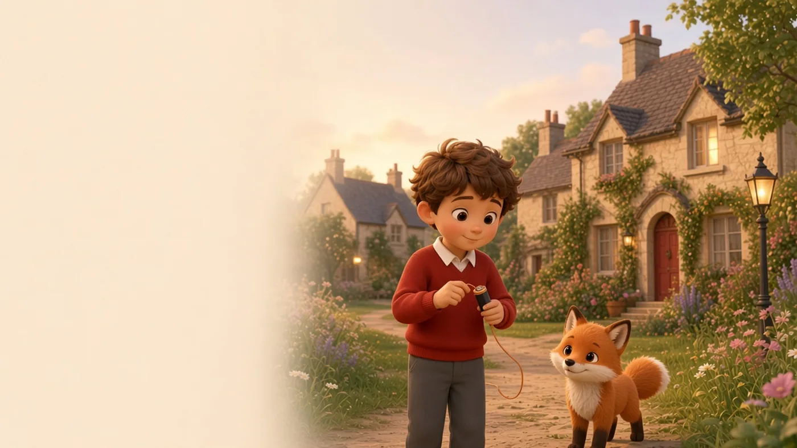

See an example
The Night the Lights Went Out
The lights have gone out across Wondii Town. Join Alex and Fox, discover how circuits work and help bring the town back to life.
A curated demonstration for teachers. This journey is not part of the live student product yet.
